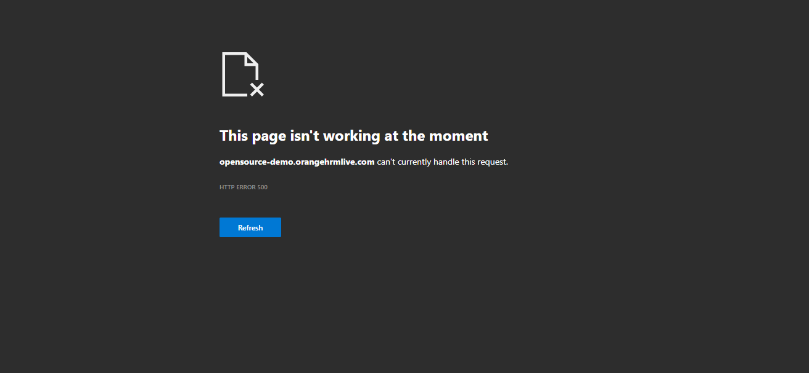

Started
Feb 22, 2024 10:33:14 pm
Ended
Feb 22, 2024 10:38:41 pm
Features Passed
0
Features Failed
2
Features
Scenarios
Steps
Timeline
System/Environment
| Name | Value |
|---|---|
| AppName | Orange HRM |
| user | Nihal |
| build | 1.1 |
| os | Windows |
-
To check Login functionality
10:33:15 pm / 00:05:16:561 Fail
To check Login functionality
02.22.2024 10:33:15 pm 02.22.2024 10:38:32 pm 00:05:16:561 · #test-id=1FailLogin page titleparallel.Hooks.LaunchBrowser()Given User is on login pageStep skippedAnd User gets title of the pageStep skippedparallel.Hooks.teardown(io.cucumber.java.Scenario)parallel.Hooks.quitBrowser()FailForgot password linkparallel.Hooks.LaunchBrowser()Given User is on login pageStep skippedThen Forgot password link should be displayedStep skippedparallel.Hooks.teardown(io.cucumber.java.Scenario)parallel.Hooks.quitBrowser()FailLogin with Correct credentialsparallel.Hooks.LaunchBrowser()Given User is on login pageStep skippedWhen User enters username as "Admin" and Password as "admin123"Step skippedAnd User clicks on login buttonStep skippedThen User gets the title of the pageStep skippedparallel.Hooks.teardown(io.cucumber.java.Scenario)parallel.Hooks.quitBrowser() -
Verify Admin
10:38:32 pm / 00:00:08:985 Fail
Verify Admin
02.22.2024 10:38:32 pm 02.22.2024 10:38:41 pm 00:00:08:985 · #test-id=25FailVerify user is on Admin pageGiven User is on login pageWhen User enters username as "Admin" and Password as "admin123"And User clicks on login buttonStep skippedThen User gets the title of the pageStep skippedparallel.Hooks.teardown(io.cucumber.java.Scenario)_V_e_r_i_f_y_ _u_s_e_r_ _i_s_ _o_n_ _A_d_m_i_n_ _p_a_g_e_
-
java.lang.NullPointerException
6 tests
java.lang.NullPointerException
6 failedStatus Timestamp TestName Fail 22:34:25 pm parallel.Hooks.teardown(io.cucumber.java.Scenario) To check Login functionality.Login page title.parallel.Hooks.teardown(io.cucumber.java.Scenario)Fail 22:34:25 pm parallel.Hooks.quitBrowser() To check Login functionality.Login page title.parallel.Hooks.quitBrowser()Fail 22:36:37 pm parallel.Hooks.teardown(io.cucumber.java.Scenario) To check Login functionality.Forgot password link.parallel.Hooks.teardown(io.cucumber.java.Scenario)Fail 22:36:37 pm parallel.Hooks.quitBrowser() To check Login functionality.Forgot password link.parallel.Hooks.quitBrowser()Fail 22:38:32 pm parallel.Hooks.teardown(io.cucumber.java.Scenario) To check Login functionality.Login with Correct credentials.parallel.Hooks.teardown(io.cucumber.java.Scenario)Fail 22:38:32 pm parallel.Hooks.quitBrowser() To check Login functionality.Login with Correct credentials.parallel.Hooks.quitBrowser() -
org.openqa.selenium.SessionNotCreatedException
3 tests
org.openqa.selenium.SessionNotCreatedException
3 failedStatus Timestamp TestName Fail 22:33:15 pm parallel.Hooks.LaunchBrowser() To check Login functionality.Login page title.parallel.Hooks.LaunchBrowser()Fail 22:34:25 pm parallel.Hooks.LaunchBrowser() To check Login functionality.Forgot password link.parallel.Hooks.LaunchBrowser()Fail 22:36:37 pm parallel.Hooks.LaunchBrowser() To check Login functionality.Login with Correct credentials.parallel.Hooks.LaunchBrowser() -
org.openqa.selenium.NoSuchElementException
1 tests
org.openqa.selenium.NoSuchElementException
1 failedStatus Timestamp TestName Fail 22:38:35 pm When User enters username as "Admin" and Password as "admin123" Verify Admin.Verify user is on Admin page.When User enters username as "Admin" and Password as "admin123"